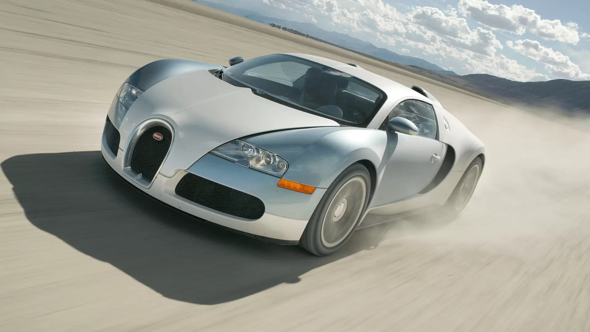
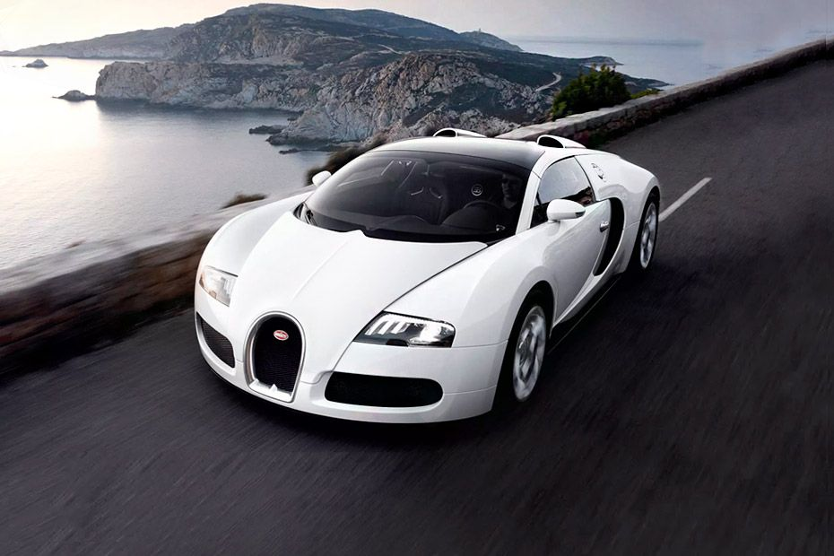

The development of the BUGATTI VEYRON was one of the greatest technological challenges ever known in the automotive industry.
Bugatti set the benchmark even higher with the plan of turning the supercar into a luxury road car suitable for everyday use.


Barely any parts, components or systems could be taken from existing car concepts and used in the Veyron. Everything had to be developed from scratch in order to achieve the performance specs and then everything had to be implemented in the car. The process also drew on the experiences of other industries in which materials and systems are routinely subject to extreme speeds and forces, such as aviation and space travel. The Veyron is the first – and the only – supercar to be developed and constructed with a series configuration that can master any driving scenario at any time. Even more than 15 years after its launch, the supercar is still setting benchmarks and inspiring emotion and enthusiasm across the globe.